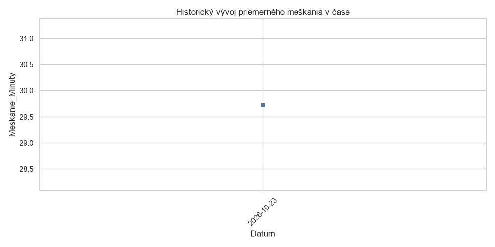
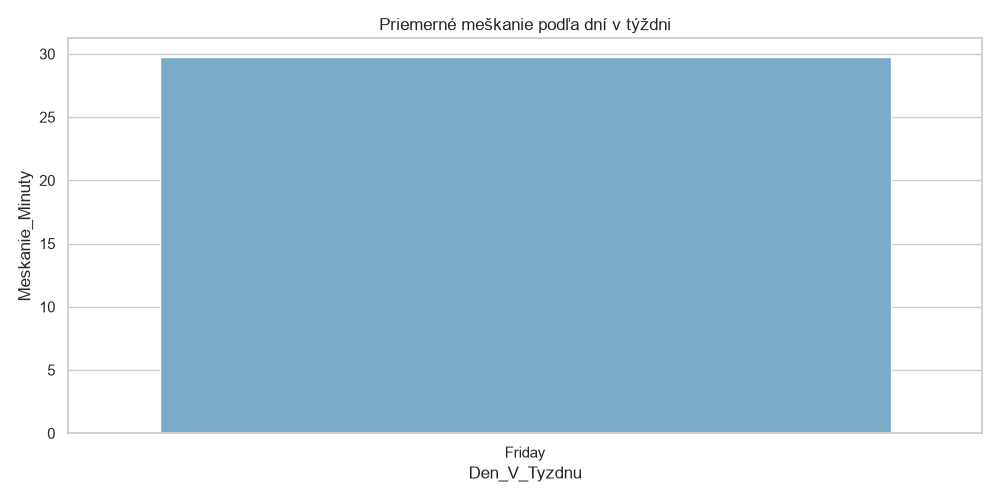
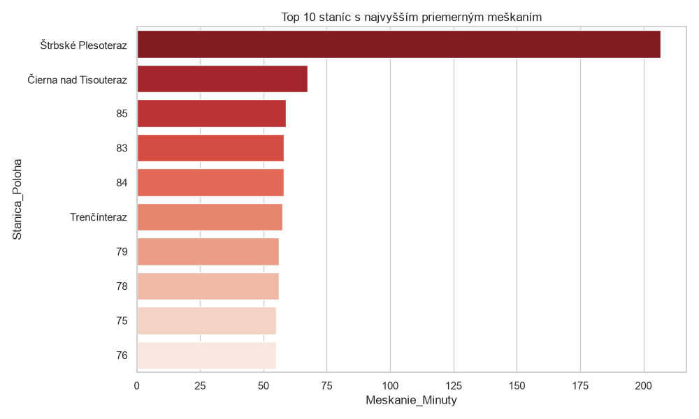
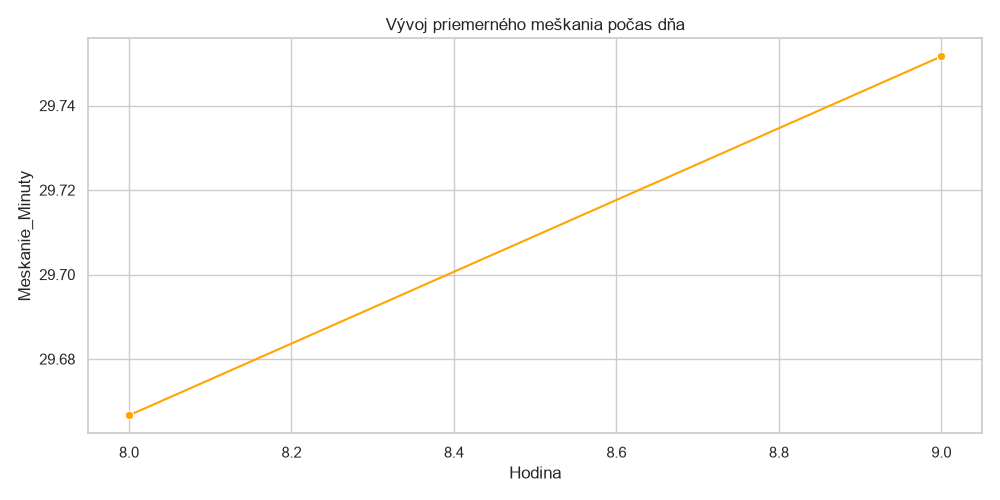

Detailná analýza, história a štatistiky meškaní vlakov zbierané v reálnom čase.
KOMPLETNÁ ŠTATISTIKA MEŠKANÍ VLAKOV Celkový počet zaznamenaných meraní: 201 Priemerné meškanie: 29.73 min. Maximálne zaznamenané meškanie: 226 min.
| Vlak | Priemerné meškanie (min) |
|---|---|
| Os 8102smer Štrbské Pleso | 206.62 |
| RJ 1222 REGIOJETsmer Čierna nad Tisou št. hr. | 62.88 |
| Os 5307smer Trenčín | 57.62 |
| mešká do 5 minút | 56.50 |
| EN 443 SLOVAKIAsmer Humenné | 46.33 |



